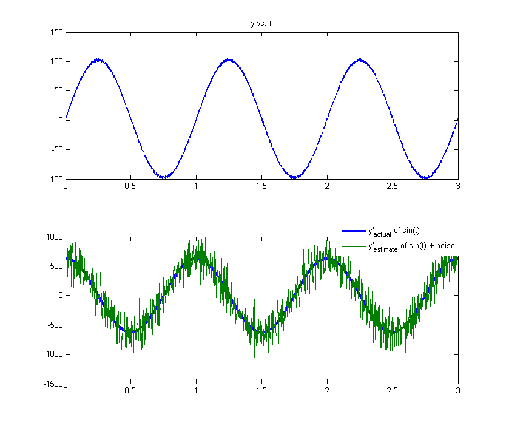
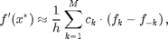
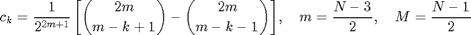
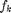
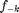

robustDiff
differentiator using smooth noise-robust differentiator formula
y_dot = robustDiff(y, dt, N)
Contents
Inputs
- y - signal/vector
- dt - time or distance between points in y
- N - Number of points to use in differentiation. This value must be positive odd integer greater than 5.
Outputs
y_dot - differentiated signal/vector
Description
robustDiff differentiates a signal/vector numerically using N points. Both future information and past information are used to calculate the derivative. In signal processing, this is called non-causal. The larger the value of N, the more high frequency noise is suppressed unlike Savitsky-Golay (Lanczos differentiation) filters and Central Difference methods (see references). Note that the derivative is not estimated at the edges of y. This means that (N-1)/2 points at the beginning and end of y are NaN. See the example.
Example
dt = 0.001; % sampling rate of 1000Hz t = 0:dt:3; % sec noiseFrequency = 450; % Hz noise = 10*rand(size(t)); % Noise is 10% of signal frequency = 1; %Hz y = 100*sin(2*pi*frequency*t) + noise; N = 21; % Number of points to use to estimate derivative y_dot_estimate = robustDiff(y, dt, N); y_dot_actual = 100*2*pi*frequency*cos(2*pi*frequency*t); figure('position',[1000 628 834 710]); subplot(211); plot(t, y); title('y vs. t'); subplot(212); plot(t, y_dot_actual, 'DisplayName', 'y''_{actual} of sin(t)','lineWidth',3); hold('all') plot(t, y_dot_estimate, 'DisplayName', 'y''_{estimate} of sin(t) + noise'); a = legend('show'); set(a,'position',[0.6653 0.4068 0.2410 0.0761]) hold('off'); disp(['Beginning and ending (N-1)/2 points of ' ... 'y_dot_estimate are NaN']); y_dot_estimate(1:(N-1)/2) y_dot_estimate(end-(N-1)/2+1:end)
Beginning and ending (N-1)/2 points of y_dot_estimate are NaN ans = NaN NaN NaN NaN NaN NaN NaN NaN NaN NaN ans = NaN NaN NaN NaN NaN NaN NaN NaN NaN NaN
Formula
This is the the formula that robustDiff implements. This is a direct quote of Pavel Holoborodko's website. Please, refer to the link for more information.

where

- N - Number of points used to estimate derivative
-  - k points in front of current point
-  - k points behind current point
- h - Time or distance between points
References
This function is based on the formulas by Pavel Holoborodko from his website: http://www.holoborodko.com/pavel/numerical-methods/numerical-derivative/smooth-low-noise-differentiators/ A big thanks is due to Pavel Holoborodko for developing this family of formulas.